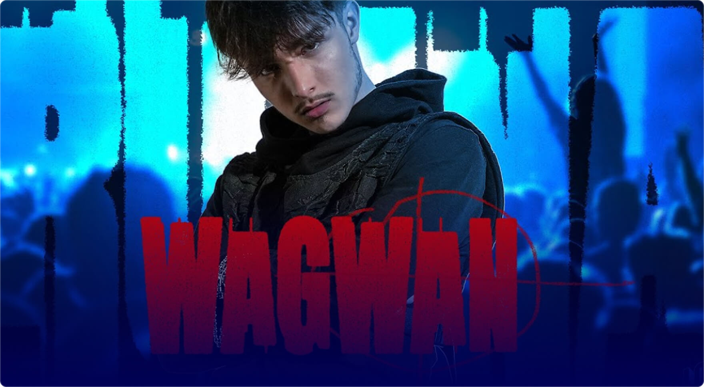

Cash Money Records
Lil Wayne: hip-hopa Neuništivi kreator modernog hip-hopa Neuništivi kreator

Dwayne Michael Carter Jr., poznat kao Lil Wayne, odrastao je u siromašnom dijelu New Orleansa.
Već s dvanaest godina potpisuje ugovor s diskografskom kućom „Cash Money Records“, kad je njegov talent prepoznao legendarni reper – Birdman. Njegov talent bio je odmah očit, ali nitko nije mogao predvidjeti da će postati jedan od najvažnijih glasova svoje generacije.
Wayneov rani rad bio je obilježen sirovom energijom i vrlo specifičnim stilom. No, pravi procvat karijere zasigurno doživljava s početkom serije albuma “Tha Carter“. Prvim albumom iz te serije, objavljenim 2004. godine, pokazao je sposobnost kombiniranja liričke dubine koju ima s komercijalnom privlačnošću. Svaki sljedeći “Carter” album podizao je ljestvicu, a “Tha Carter III” iz 2008. postao je kulturni fenomen, prodavši se u milijun primjeraka u prvom tjednu i osvojivši Grammy za najbolji rap album, dok je singl „Lollipop“ dobio nagradu za najbolju rap pjesmu.
Cash Money Records
Dwayne Michael Carter Jr., poznat kao Lil Wayne, odrastao je u siromašnom dijelu New Orleansa. Već s dvanaest godina potpisuje ugovor s diskografskom kućom „Cash Money Records“, kad je njegov talent prepoznao legendarni reper – Birdman. Njegov talent bio je odmah očit, ali nitko nije mogao predvidjeti da će postati jedan od najvažnijih glasova svoje generacije.
Wayneov rani rad bio je obilježen sirovom energijom i vrlo specifičnim stilom. No, pravi procvat karijere zasigurno doživljava s početkom serije albuma “Tha Carter“. Prvim albumom iz te serije, objavljenim 2004. godine, pokazao je sposobnost kombiniranja liričke dubine koju ima s komercijalnom privlačnošću. Svaki sljedeći “Carter” album podizao je ljestvicu, a “Tha Carter III” iz 2008. postao je kulturni fenomen, prodavši se u milijun primjeraka u prvom tjednu i osvojivši Grammy za najbolji rap album, dok je singl „Lollipop“ dobio nagradu za najbolju rap pjesmu.
Author: Lil wayne
Source:Lil wayne
More interesting
articles about music
articles about music

INTERVJUI
Lil Wayne: Neuništivi kreator modernog
Kada se govori o najutjecajnijim imenima u povijesti hip-hopa, nemoguće je zaobići
INTERVJUI
Lil Wayne: Neuništivi kreator modernog
Kada se govori o najutjecajnijim imenima u povijesti hip-hopa, nemoguće je zaobići
INTERVJUI
Lil Wayne: Neuništivi kreator modernog
Kada se govori o najutjecajnijim imenima u povijesti hip-hopa, nemoguće je zaobići